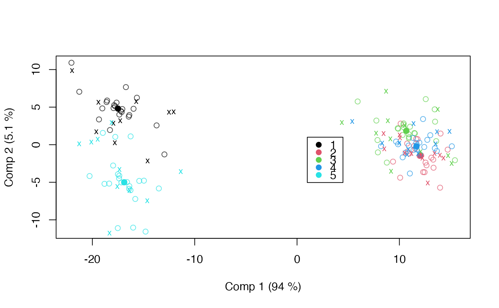

Reconstructs the HDANOVA base on newdata via predict.hdanova()
and then applies the class-specific decomposition step:
sca() for ASCA/APCA/MSCA and pls() for APLS.
By default, decomposition is done by projection onto training component
spaces. A refit mode is also available.
Usage
# S3 method for class 'asca'
predict(object, newdata, decomposition = c("project", "refit"), ...)
# S3 method for class 'apca'
predict(object, newdata, decomposition = c("project", "refit"), ...)
# S3 method for class 'msca'
predict(object, newdata, decomposition = c("project", "refit"), ...)
# S3 method for class 'apls'
predict(object, newdata, decomposition = c("project", "refit"), ...)
# S3 method for class 'limmpca'
predict(object, newdata, decomposition = c("project", "refit"), ...)Arguments
- object
A fitted
asca,apca,msca,apls, orlimmpcaobject.- newdata
A data frame containing variables from the original model formula.
- decomposition
Decomposition mode:
"project"(default) projects onto training component spaces;"refit"recomputes decomposition on predicted LS matrices.- ...
Reserved for compatibility; forwarded to
predict.hdanova().
Examples
data(candies)
test_idx <- seq(3, nrow(candies), by = 3)
train_idx <- setdiff(seq_len(nrow(candies)), test_idx)
candies_train <- candies[train_idx, ]
candies_test <- candies[test_idx, ]
mod_asca <- asca(assessment ~ candy * assessor, data = candies_train)
pred_asca <- predict(mod_asca, newdata = candies_test)
scoreplot(mod_asca, factor="candy", legend=TRUE)
with(pred_asca$projected, points(candy[,1], candy[,2], pch="x", cex=0.8,
col=as.numeric(pred_asca$model.frame$candy)))

pred_asca_refit <- predict(mod_asca, newdata = candies_test, decomposition = "refit")
mod_apca <- apca(assessment ~ candy + assessor, data = candies_train)
pred_apca <- predict(mod_apca, newdata = candies_test)
mod_msca <- msca(assessment ~ candy, data = candies_train)
pred_msca <- predict(mod_msca, newdata = candies_test)
mod_apls <- apls(assessment ~ candy + assessor, data = candies_train)
pred_apls <- predict(mod_apls, newdata = candies_test)
mod_limmpca <- limmpca(assessment ~ candy + r(assessor),
data = candies_train, pca.in = 3)
pred_limmpca <- predict(mod_limmpca, newdata = candies_test)